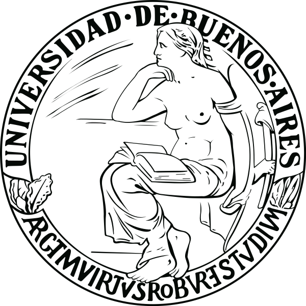
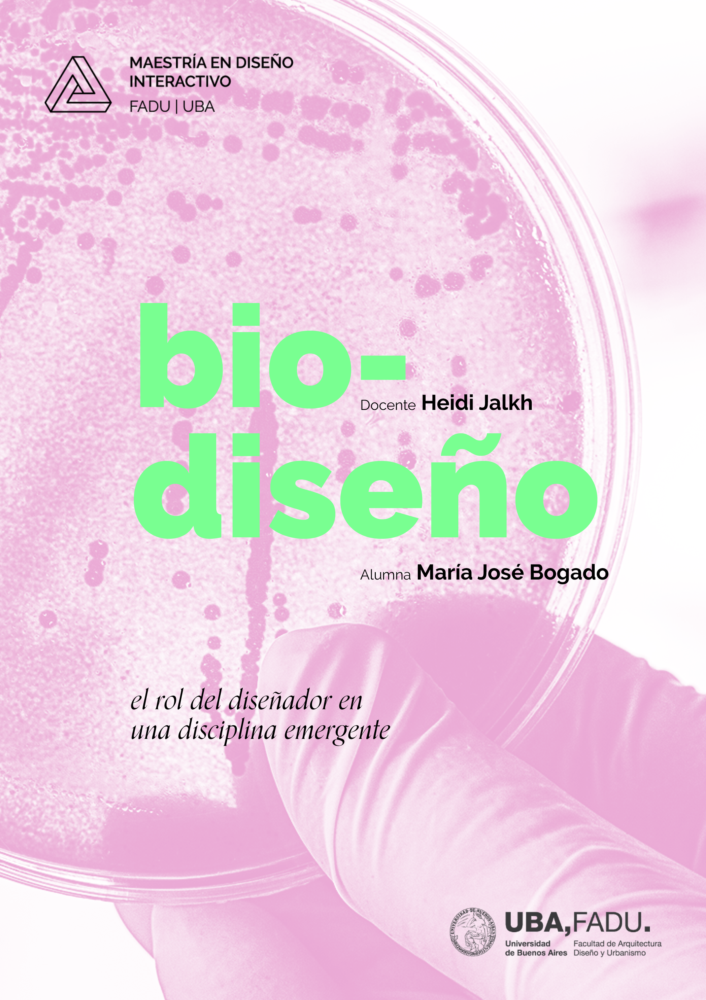

Education — master's
Master's in Interactive Design

Universidad deBuenos Aires
(UBA)
I genuinely love studying, not for the sake of it, but because I find the academic environment fascinating: interacting with people from different fields, backgrounds, and interests. By the time I finished my undergraduate degree, it was obvious to me that I would keep going. I had specific goals and things I still wanted to learn.
In 2021, I started exploring master's programs that combined design and technology with a focus on health design. I chose the Interactive Design program at the Universidad de Buenos Aires because its curriculum was exactly the mix I was looking for. The modules that excited me most were technology (hardware and software), biodesign, and artificial intelligence. So by 2022 I was starting this new chapter.


This is where Meni was born — a project I'm deeply proud of.
I defended my thesis in December 2025 and graduated with honors (Sobresaliente).